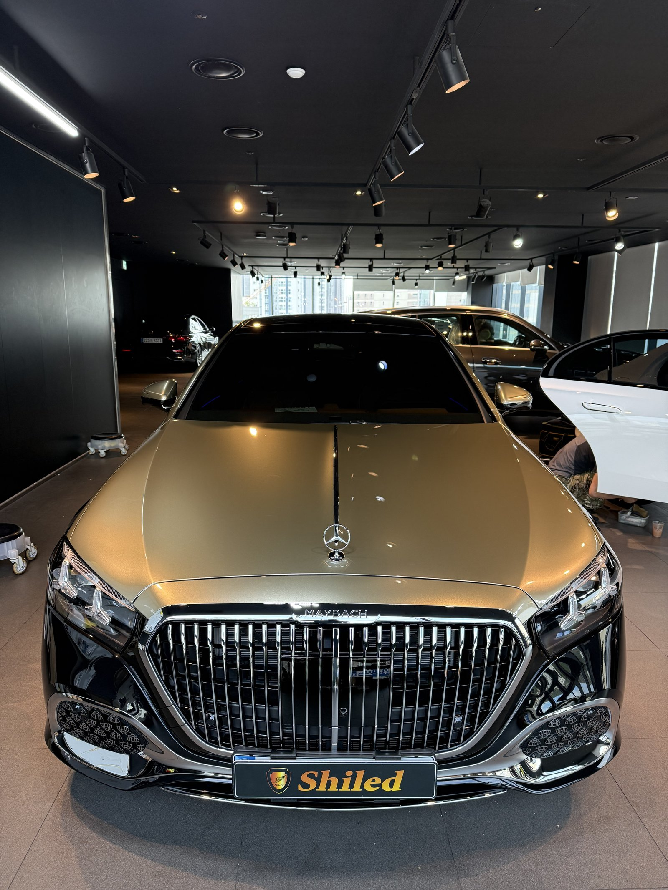
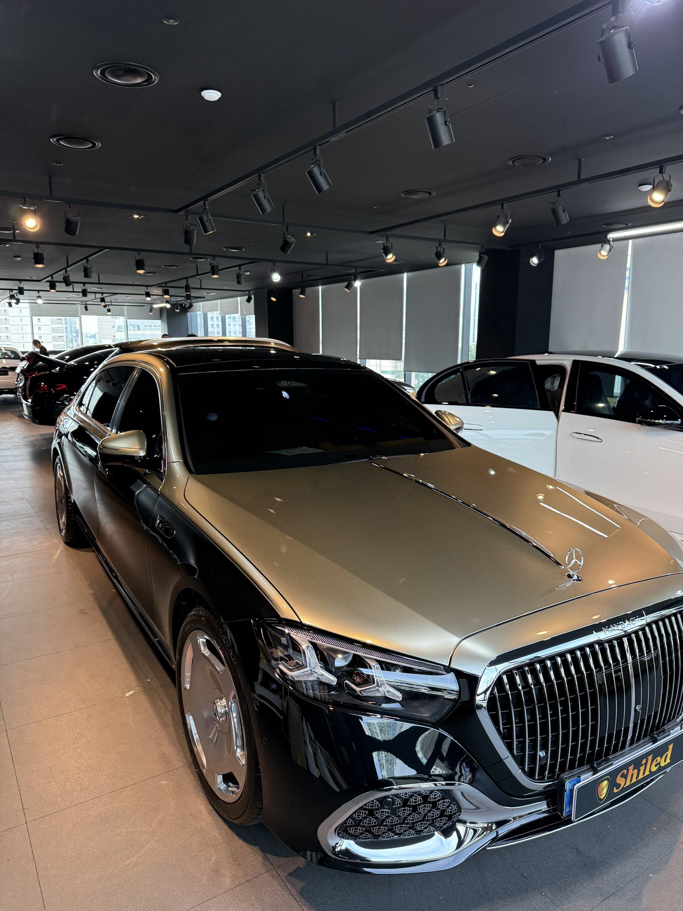
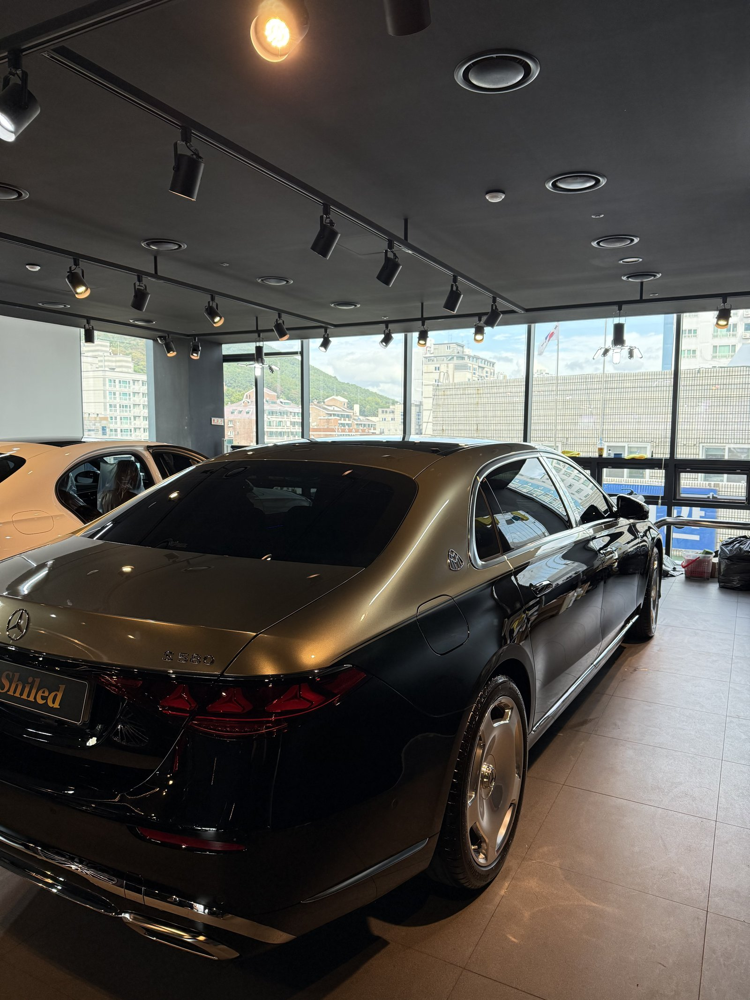
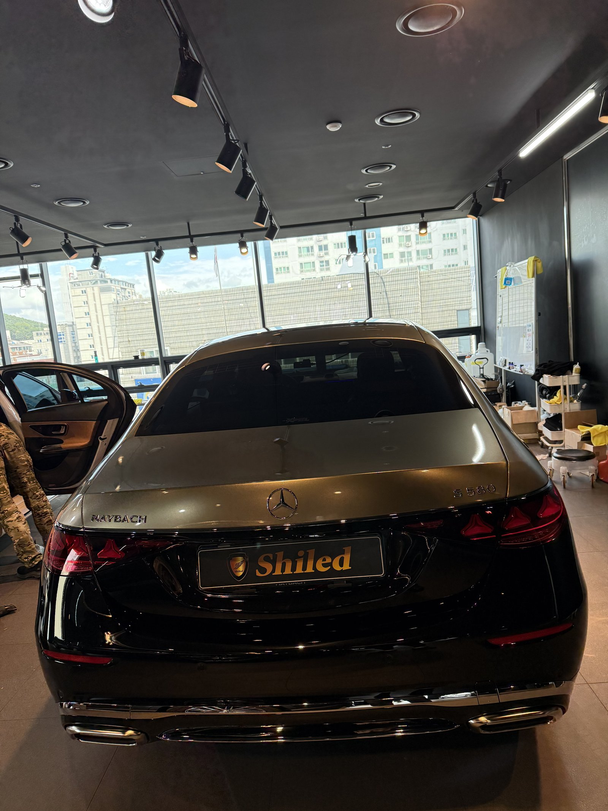
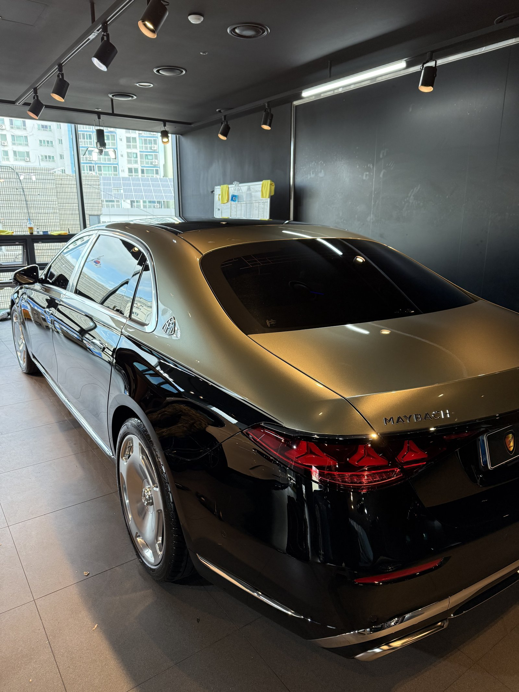
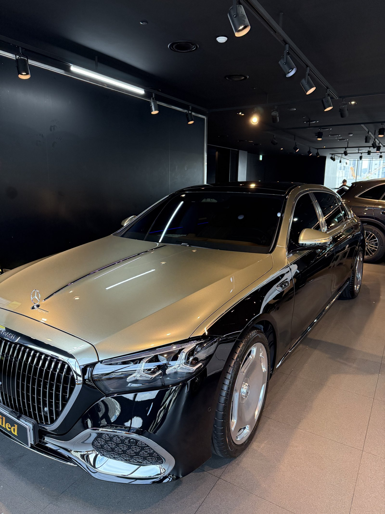
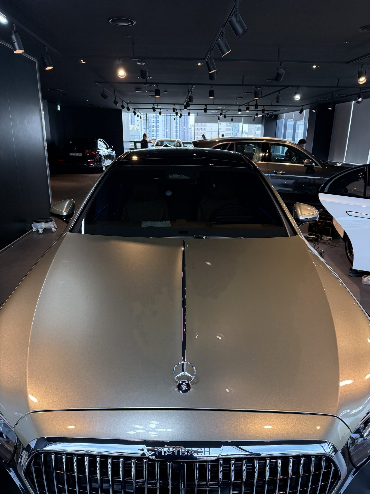
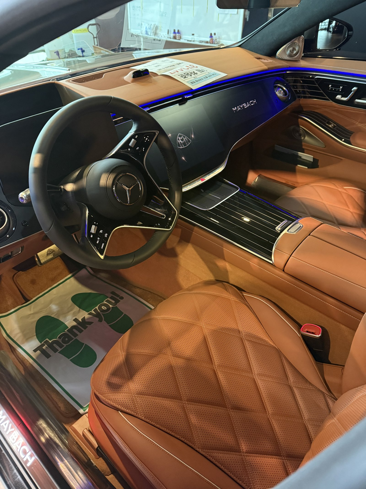
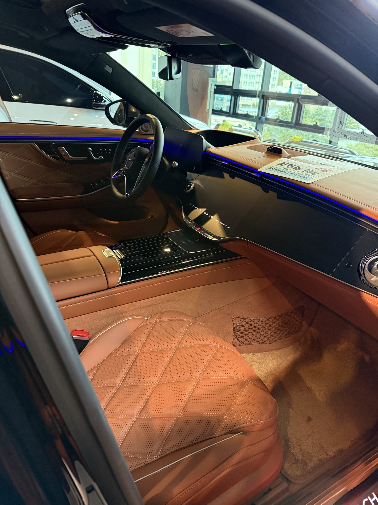
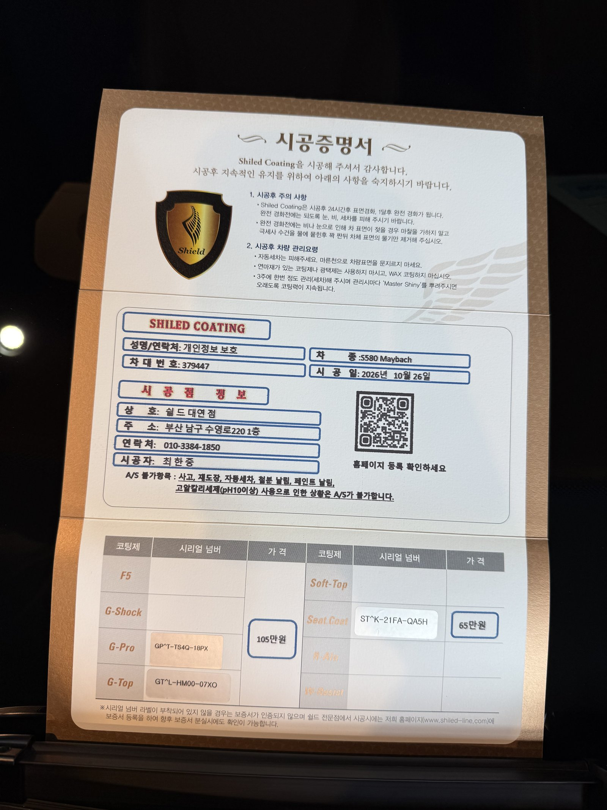

마이바흐 S580, 골드와 검정이 위아래로 나뉜 투톤 신차입니다.
외장은 듀얼코팅, 실내는 시트코팅까지 함께 진행했습니다.
출고 전 부산 유리막코팅 기록입니다.

투톤 차량은 무엇을 가장 신경 쓰나요?
두 색이 만나는 경계선입니다.
마이바흐 투톤은 차체 옆면을 가로지르는 선으로 색이 나뉩니다.
경계선은 미세한 단차가 있어 코팅제가 고이기 쉽습니다.
선을 따라 끝까지 닦아내며 위아래 광이 고르게 맞는지 확인했습니다.



골드와 검정은 반사가 어떻게 다른가요?
위쪽 골드는 빛을 부드럽게 퍼뜨립니다.
아래쪽 검정은 조명 줄을 날카롭게 비춥니다.
같은 코팅이라도 두 색에서 잔여물이 보이는 방식이 다릅니다.
골드 면은 비스듬히, 검정 면은 정면으로 나눠서 봤습니다.



기술자의 팁
투톤 경계선은 세차 때 물기가 남기 쉬운 자리입니다. 드라잉 타월로 경계선을 따라 한 번 더 눌러 닦아 주십시오.
마이바흐에 듀얼코팅과 시트코팅을 함께 한 이유
듀얼코팅은 G-PRO 위에 G-TOP을 올리는 조합입니다.
G-PRO가 스크래치 내성을, G-TOP이 발수와 방오를 맡습니다.
실내는 코냑 컬러 다이아몬드 퀼팅 가죽이라 시트코팅을 함께 했습니다.
밝은 가죽은 청바지 이염이 가장 먼저 보입니다.
코팅제는 대표가 직접 개발·제조한 제품입니다.
이번 부산 유리막코팅은 듀얼코팅과 시트코팅으로 진행했습니다.


시공증명서도 함께 드립니다
모든 시공 차량에 시공증명서를 드립니다.
차종·시공일·코팅제 시리얼 번호가 적혀 있고, 홈페이지에 등록해 보증을 받으실 수 있습니다.

차종·시공일·코팅제 시리얼이 기재된 시공증명서
자주 묻는 질문
Q. 투톤 차량도 코팅이 가능한가요?
A. 가능합니다. 두 색이 만나는 경계선의 단차에 코팅제가 고이지 않도록 따로 마감합니다.
Q. 듀얼코팅은 어떤 조합인가요?
A. G-PRO와 G-TOP을 겹쳐 올리는 조합입니다. 스크래치 내성과 발수·방오를 함께 챙깁니다.
Q. 코냑 가죽 시트에 시트코팅이 필요한가요?
A. 밝은 가죽은 청바지 물과 손때가 잘 스며듭니다. 시트코팅으로 오염이 스며드는 것을 줄일 수 있습니다.
Q. 왜 출고 전에 코팅하나요?
A. 도장면이 가장 깨끗할 때 올린 코팅이 가장 오래갑니다. 운행과 세차로 잔기스가 생기기 전에 입혀두는 것이 핵심입니다.
Q. 쉴드광택 위치와 예약은 어떻게 하나요?
A. 부산 남구 유엔로220 1F 쉴드광택입니다. 예약·상담은 010-3384-1850, 대표 최한중이 직접 상담하고 책임 시공합니다.
새 차일수록 시작점이 다릅니다. 가장 깨끗할 때 입혀두십시오.
제품을 직접 만드는 사람이 직접 시공합니다.
부산에서 신차 유리막코팅을 고민 중이시면 편하게 연락 주십시오.
어떤 차를 타냐보다 어떻게 타냐가 중요합니다~!
시공 중에는 전화를 받지 못할 때가 많습니다.
카카오톡으로 차종과 원하시는 시공을 남겨주시면 확인 후 답변드립니다.
쉴드광택 · 부산 남구 유엔로220 1F · 대표 최한중